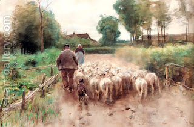

Bechorot 60 - Mistakes in Counting
If one was counting his animal tithe, and two animals squeezed out through the narrow opening together, he should count them as two. If he counted them as one, then his ninth and tenth animals are messed up: they are both holy to some degree, but not as a complete tithe; therefore, they both need to be allowed to graze until they develop a blemish, and then they can be slaughtered.
If he pronounced the ninth animal to emerge from the pen "tenth", then, realizing his mistake, tried to correct it, calling the tenth animal "ninth", and then continued counting and called the eleventh animal "tenth", the ninth is eaten if it gets a blemish, the tenth is the real tithe, and the eleventh is brought as a peace offering. Why ?
Calling the ninth animal "tenth" gave it a degree of holiness, and it can't be slaughtered until it develops a blemish. The owner made a mistake calling the tenth "ninth," but it become tithe through his intent. And, since the word "tenth" was never properly applied, it kept its power and made the eleventh animal a Temple sacrifice. Ninth and eleventh are sanctified because of an extra word " it will be " holy.
Art: Anton Mauve - Bringing Home The Flock